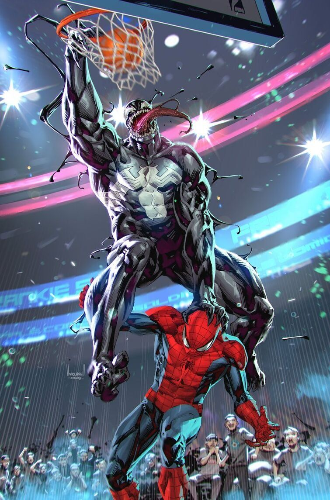

Venom es un simbionte alienígena que necesita un huésped para sobrevivir.
Llega a la Tierra y primero se une a Peter Parker, dándole más poder, pero también volviéndolo más agresivo.
Cuando Peter lo rechaza, el simbionte se une a Eddie Brock, un periodista con rencor hacia Spider-Man.
Juntos forman Venom, un ser fuerte y peligroso con habilidades similares a Spider-Man.
Aunque empieza como villano, con el tiempo Venom se convierte en un antihéroe que protege a los inocentes a su manera.